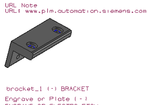

创建 URL 注释
-
选择产品制造信息→专用→URL 注释
 。
。 -
在 URL 注释对话框中原点组下方的方向子组中，从平面列表中选择用户定义
 。
。 -
在属性组中，使用默认设置。
标题 = URL
URL = www.plm.automation.siemens.com
-
单击部件上方以放置注释，然后点击取消。

-
在图形窗口中，右击 URL 注释并选择打开 URL。
将打开一个浏览器窗口，并在其中打开 http://www.plm.automation.siemens.com。
-
如果该网页取代了课程窗口，点击后退。
如果没有后退按钮，右击并选择后退。
-
关闭部件。